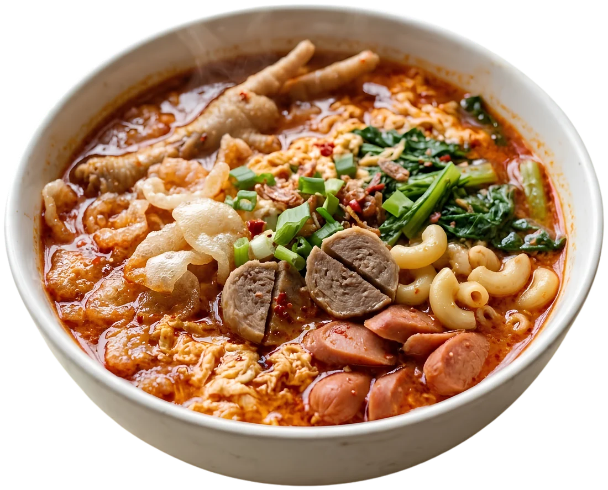

Seblak pedas yang bikin nagih
Kerupuk kenyal, bakso, dan sayur dalam kuah kencur-cabai. Pilih tingkat pedasmu, pesan lewat WhatsApp.

Pedasnya kamu yang atur
Kuah kencur dan cabai yang gurih, dengan topping yang bisa kamu pilih. Dari yang tidak pedas sampai yang menantang, semua ada tingkatnya.